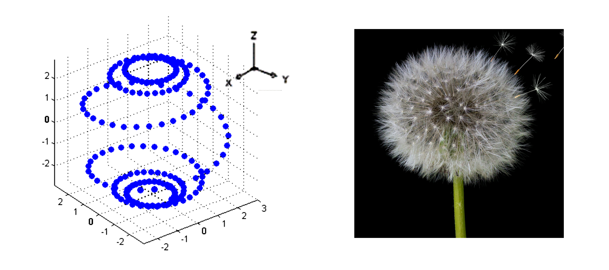
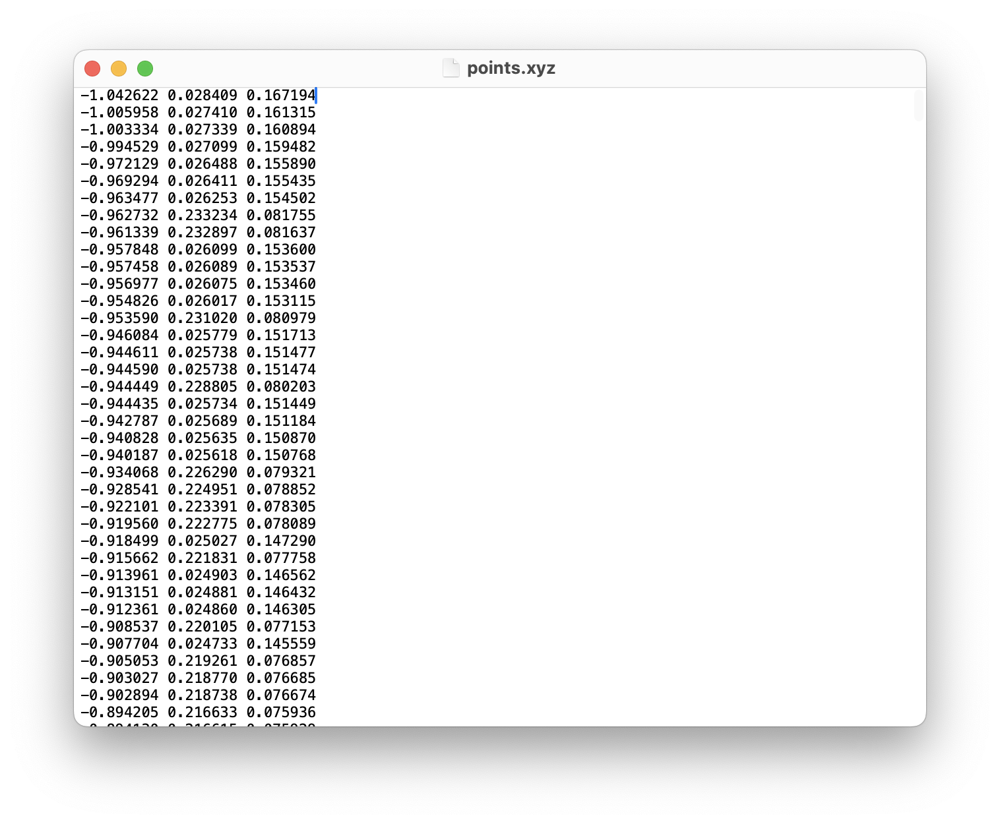
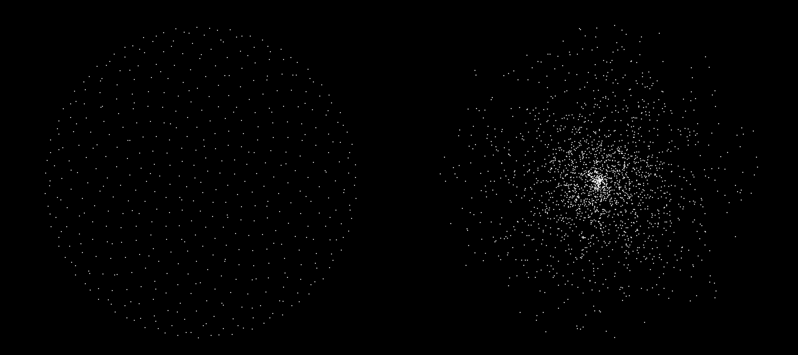
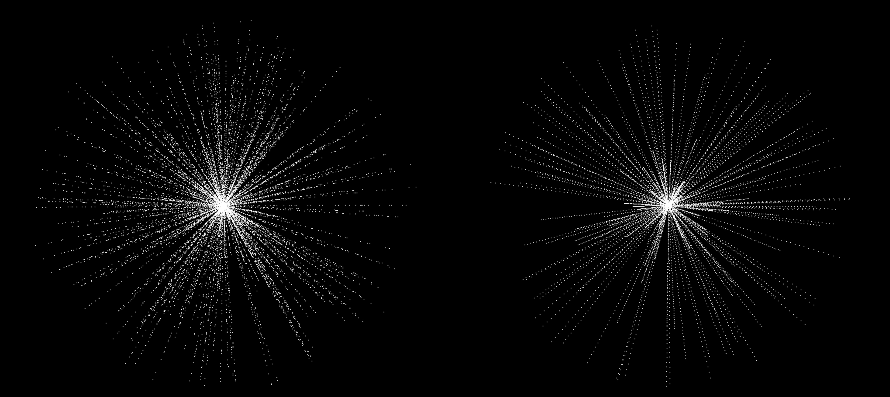
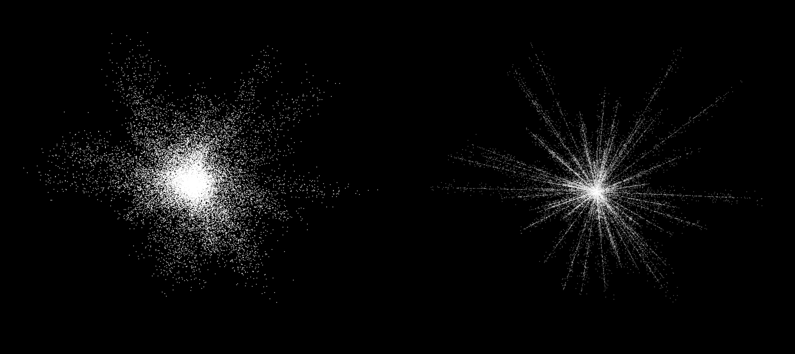
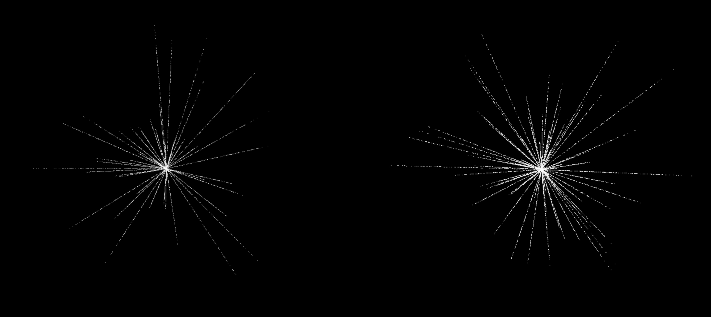
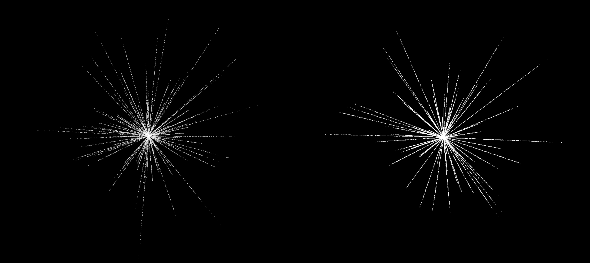

This labatory, located on the web, documents the essence of Gonni’s digital experiments of creating immersive web experiences.
It records Gonni’s first journey in translating her visual concepts through coding, using a JavaScript API that enables 3D graphics in users' browsers via the GPU, allowing them to experience spatial web space.
Through this project, she aimed to enable developing prototypes by herself through coding, ensuring that she could realise her visual ideas and direction witout limitations.
1. XYZ Experiment
Instead of using mesh based 3D objects, she experimented with raw XYZ coordinate data file, which is a number-based text file that stores the X,Y,Z coordinates in 3D space, to generate supernatural structure of energy flow looking visual through moving dots based on the data calculation.
She imported a Helix-shaped XYZ file and transformed it into a dandelion-like structure to visualise the flowing movement of aura. This transformation was inspired by the way natural forces shape organic structures, to realise the visual of energy flow and aura. She experimented adjusting the xyz data files for the density, positioning, and randomness of the countless dots.
     10 experimental variables.xyz
2. BufferGeometry Particles Experiment
She explored fragmented, particle-driven formations, using Vector calculations (Vector2.js, Vector3.js) to visualise the particle waves spreaded across the ocean.